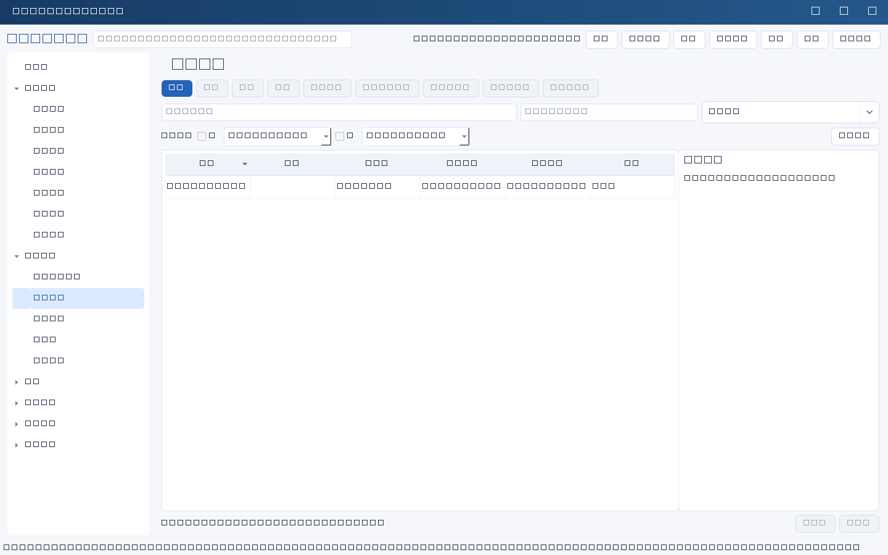
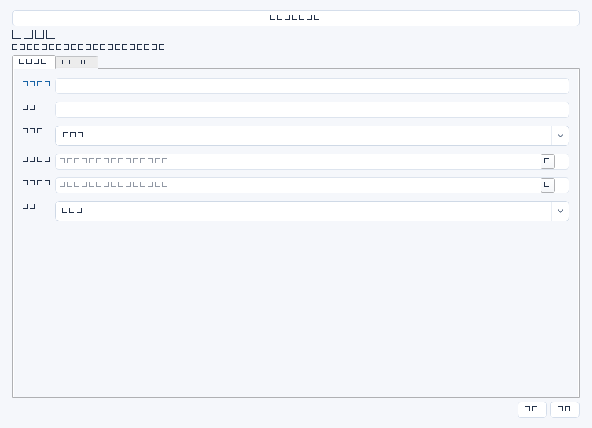

把公司经营诉求转为可分解、可验收的中长期IT规划。先取得经营计划、业务部门痛点访谈、现有系统清单和预算边界，再写目标；不是先罗列采购设备。普通保存只强制名称，其他完整性要求属于管理建议；每个字段最多50000字符。


操作步骤与资料获取
- 向经营负责人取得年度经营重点，向业务负责人取得瓶颈数据，向财务确认预算边界；记录文件版本、提供人及确认日期，敏感原件留在受控资料库。
- 新增规划，以“周期＋业务主题”命名，写清目标对象、当前问题、期望结果和负责人；开始日期与截止日期应覆盖评估、建设、试运行和收益复核。
- 把业务目标改写为可检验标准，如关键系统恢复能力、流程处理时长或合规缺口数量；在备注留目标依据和证据目录，不把无来源的行业数字当作承诺。
- 保存后再到项目管理建立实施项目并选择本规划；按月人工核对项目进度与目标偏差，调整时说明范围、日期及批准依据。
字段逐项说明
| 操作 / 字段 | 详细说明 |
|---|---|
| 名称 | 规划显示标题，强制非空；建议写“2026—2027关键业务连续性提升规划”，不要只写“IT规划”。 |
| 周期 | 规划所覆盖的业务周期，如2026—2027年度；文本字段，不会自动推算日期。 |
| 业务目标 | 说明服务哪个业务结果、现状基线、目标值和测量口径；从经营计划和业务确认纪要取得，建议标注来源版本。 |
| 负责人 | 牵头协调与复盘的人；可选已有人员姓名或填写文本，不强制存在人员记录，不代表系统授予权限。 |
| 开始日期 | 规划启动日；可空，填写时强制有效YYYY-MM-DD。 |
| 截止日期 | 规划验收或复核截止日；可空，填写时强制有效YYYY-MM-DD，且有开始日期时不能早于开始日期。 |
| 状态 | 按实际进展选择通用状态，如未开始、进行中、待验收、已完成；除特殊模块规则外，状态不是审批流，普通规划没有完成证据必填门槛。 |
| 验收标准 | 建议列出指标、目标值、测量时间窗、证据和确认角色，例如ERP恢复演练不超过4小时并由财务确认关键单据。 |
| 备注 | 记录经营计划版本、访谈纪要位置、预算假设、范围排除项及变更原因；文本路径不会自动上传或保管文件。 |


示例（仅演示）
| 操作 / 字段 | 详细说明 |
|---|---|
| 名称 | 2026—2027关键业务连续性提升规划 |
| 周期 | 2026—2027年度 |
| 业务目标 | 依据经营计划V2及财务访谈纪要：ERP恢复目标从未验证调整为4小时内，年度至少验证一次 |
| 负责人 | 李明 |
| 开始日期 | 2026-04-01 |
| 截止日期 | 2027-12-31 |
| 状态 | 进行中 |
| 验收标准 | ERP隔离恢复演练≤4小时；关键财务单据核对通过；留存业务签认纪要 |
| 备注 | 依据：受控资料库/规划/经营计划V2、访谈纪要20260320；此路径仅为示意 |
形成闭环
- 组织业务、技术和财务按验收标准核对成果，记录未完成目标及处置决定。
- 在备注补充验收纪要及收益复核位置，再人工更新状态；完成规划不会自动完成关联项目。
- 保留原始基线和调整依据，后续规划引用实测结果而非覆盖旧口径。
常见误区与边界
- 把“上云”“买服务器”当业务目标，缺少业务价值和验收口径。
- 误以为到期或项目完成会自动推进规划状态；关联仅建立记录关系。
- 把管理建议写成软件强制要求：规划完成没有验收标准必填校验，但业务上仍建议完整留证。